Bienvenue dans notre galerie des sucreries de la cuisine algérienne, où nous vous invitons à découvrir une sélection exquise de délices sucrés qui font la richesse de la tradition culinaire algérienne. De la pâtisserie raffinée aux douceurs traditionnelles, chaque création sucrée est une ode à la créativité, à la générosité et à la convivialité qui caractérisent la gastronomie algérienne. Explorez cette galerie pour vous immerger dans un monde de saveurs sucrées et de plaisirs gustatifs incomparables.
| Nom de Plats | region | Images |
|---|---|---|
| sabli | Tizi ouzou | 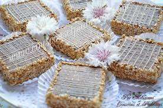 |
| geriwech | Boumerdes | 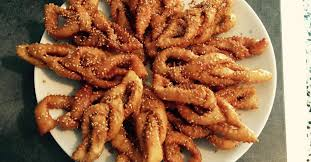 |
| meqroud | Mila | 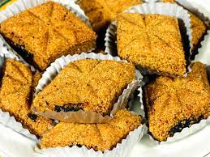 |
| samsa | Constantine | 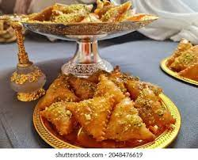 |
| charak | Batna | 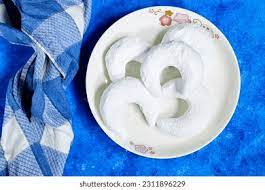 |
| beghrir | Bouira | 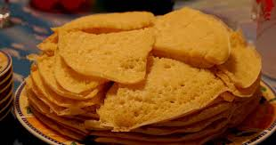 |
| baklawa | Alger | 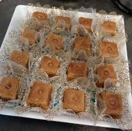 |
| qelb el louz | Setif | 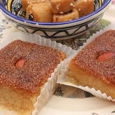 |
| gheribia | Blida | 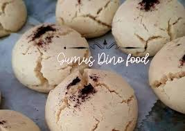 |
| sefenj | Tipaza | 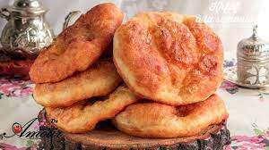 |
| mesmen | Khenchla | 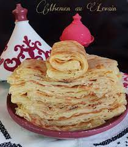 |
| Bradj | Akbou | 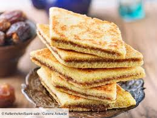 |
| Zlabia | Boufarik | 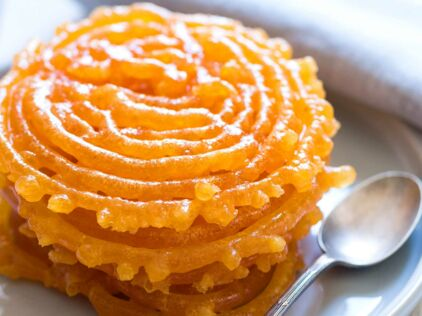 |
| Dziriette | Alger | 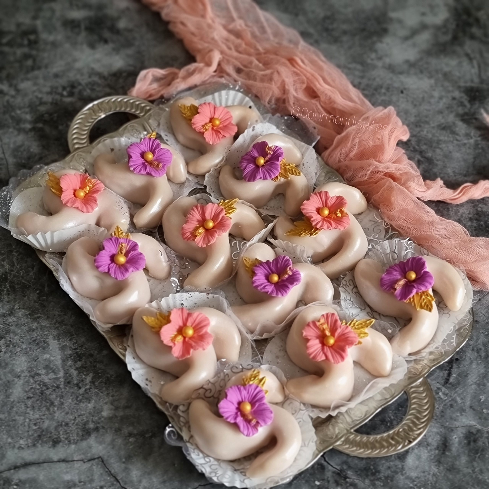 |
| Tabaa | Bab El Oued | 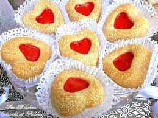 |